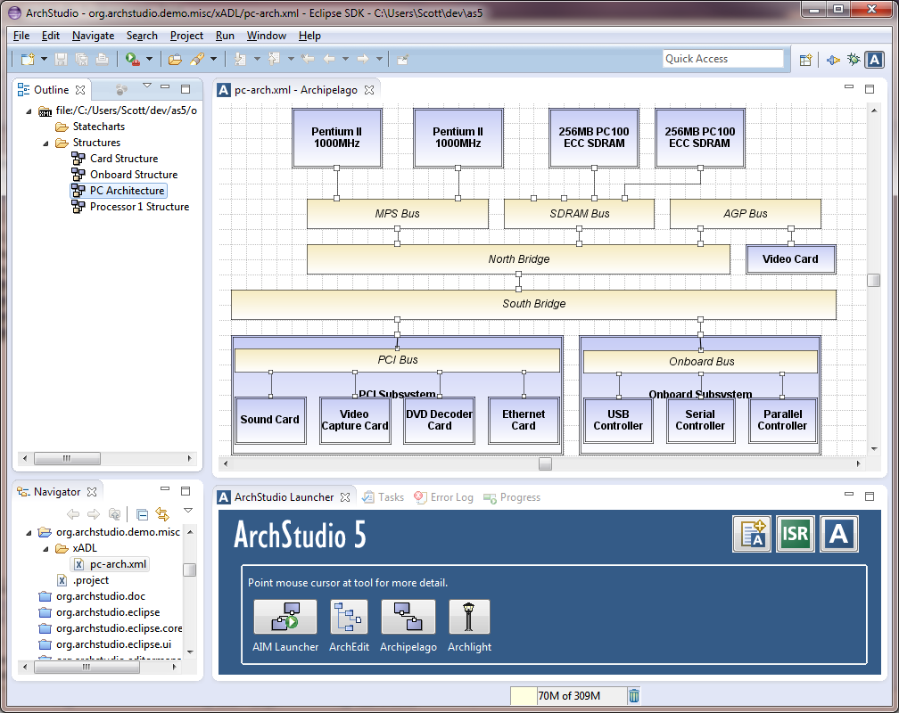

ArchStudio 4
ArchStudio 4 is an open-source
software and systems architecture
development environment developed by the
Institute for Software Research
at the University of California, Irvine.
It is an environment of integrated tools for modeling, visualizing, analyzing and implementing
software and systems architectures. It is based on the
Eclipse open development platform. It
is released under a BSD-style
license.
This is where you can find all the latest
news and documentation about ArchStudio, as well as downloads and an
active community.

A screenshot of ArchStudio 4 showing a hierarchical architecture in
the Archipelago graphical editor.
Latest Updates:
The latest updates for ArchStudio 4 are documented in the
ArchStudio 4 Change Log.
 [November 21, 2006] -
Welcome to a completely new ArchStudio - ArchStudio 4. Building
on the successes and insights of ArchStudio 3, ArchStudio 4
performs faster, has a better and more intuitive user interface,
and is fully integrated into the Eclipse development environment.
[November 21, 2006] -
Welcome to a completely new ArchStudio - ArchStudio 4. Building
on the successes and insights of ArchStudio 3, ArchStudio 4
performs faster, has a better and more intuitive user interface,
and is fully integrated into the Eclipse development environment.
Contact Us
If you have questions not answered by this website, please feel free to
contact the software architectures group at UC Irvine at:
the archstudio developer's email list (mailman protected) archstudio-dev [a] uci [] edu.
Portions of this site Copyright © The
Regents of the University of California. All
Rights Reserved Worldwide. The development of
ArchStudio was initially funded by the DARPA
DASADA (Dynamic Assembly for Systems
Adaptability, Dependability, and Assurance)
program. The site now includes results from
projects supported in part by National Science
Foundation grants IIS-0205724 and CCF-0430066,
The Boeing Company, and IBM.